Lab1_led
This lab guides you through the process of using Vivado IDE to create a simple HDL design targeting the PYNQ-Z2. You will simulate, synthesize, and implement the design with default settings. Finally, you will generate the bitstream and download it into the hardware to verify the design functionality.
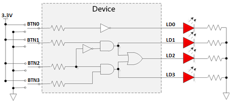
Objectives
After completing this lab, you will be able to:
-
Create a Vivado project sourcing HDL model(s) and targeting the ZYNQ devices located on the PYNQ-Z2 boards.
-
Use the provided Xilinx Design Constraint (XDC) file to constrain the pin locations.
-
Simulate the design using the Vivado simulator.
-
Synthesize and implement the design.
-
Generate the bitstream.
-
Configure ZYNQ using the generated bitstream and verify the functionality.
Source code
Steps
Create Project Folder and Launch Vivado
For Linux User:
-
Launch Palmetto Desktop
-
Open a new terminal. Notice that when you open a new terminal, the first step is sourcing the environment variables to run Vitis and Vivado.
source /project/twei2/vitis/vitinstall/Vitis/2022.2/settings64.sh
- You can create a folder first for making the file path more clearly or run
vivadodirectly, it up to you.
mkdir Lab1
cd Lab1
vivado
For Windows User:
-
Create a new folder (e.g.,
C:\Users\twei2\workspace\course\Lab1) -
Launch Vivado
Create a Vivado Project
-
Click Create New Project, and click Next. Then, give your project a name (i.e. project_1) and choose RTL Project. Making sure the Project location is the correct path that you want to save the project.
-
Select the board, search
pynqand choosepynq-z2, then click Next and Finish. If you do not have it, follow the instruction in the provided link below.
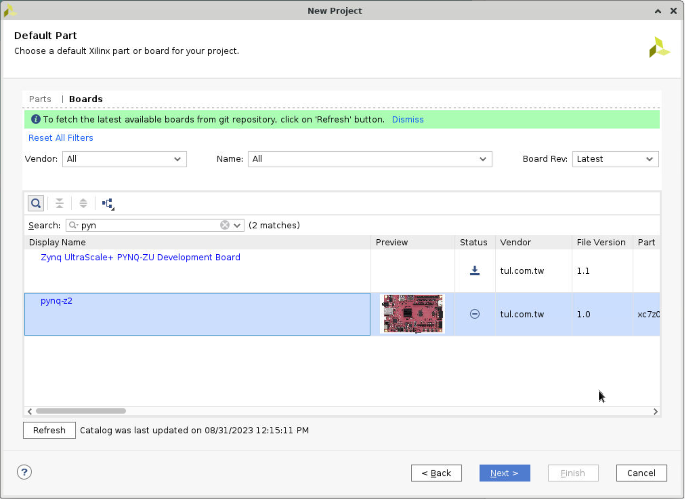
Add source files
- Read this document first.
-Vivado design suite user guide
There are three kinds of source files: constrains file, design source file and silumation source file. Simulation source file and constraints file specify the timing requirements for the design and physical constraints defining the Xilinx device resources used by the design.
- Click Add Sources under the PROJECT MANAGER - Settings and choose Add or create design sources. Then, click Create File, give the file name (i.e. lab1.v), and choose Finish. Later, you will see a window letting you define the I/O port. You don’t need to change anything here, just click OK and choose Yes. Then, you will see the file under the Design Sources in the Source window.
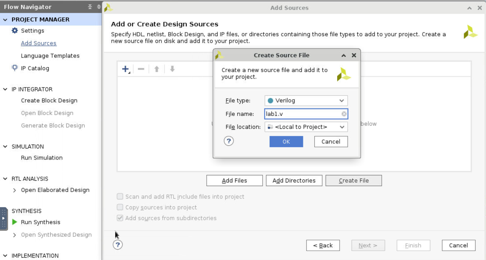
- Execute similar steps to add both the constraints file and the simulation sources file.
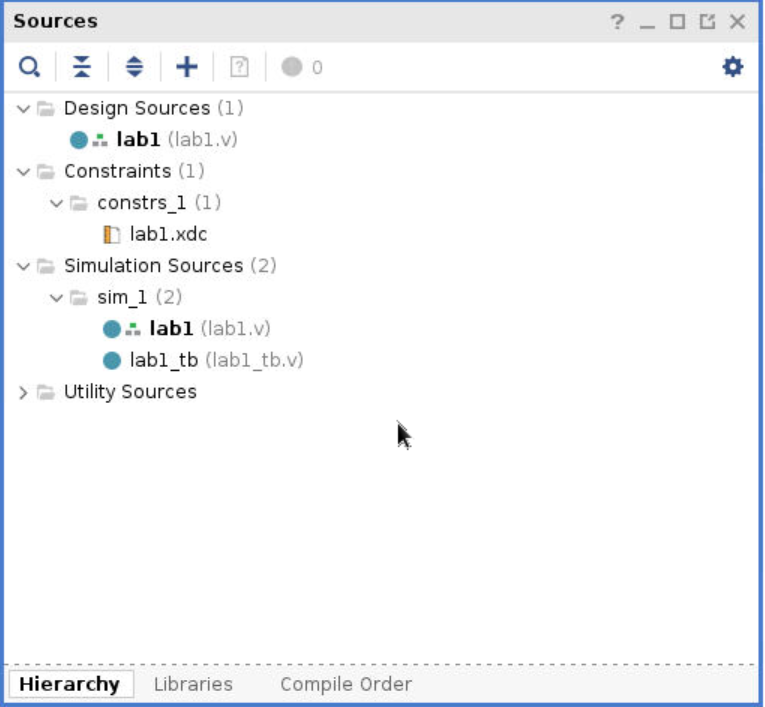
Add code
- Add design source code: Double click on the
lab1.vfile, and enter the following code:
module lab1(
input [3:0] btn,
output [3:0] led
);
assign led[0] = ~btn[0];
assign led[1] = btn[1] & ~btn[2];
assign led[3] = btn[2] & btn[3];
assign led[2] = led[1] | led[3];
endmodule
- Add simulation code: Double click
lab1_tb.v.
module lab1_tb();
reg [3:0] btns;
wire [3:0] leds;
reg [3:0] e_led;
integer i;
lab1 dut(.led(leds),.btn(btns));
function [3:0] expected_led;
input [3:0] btn;
begin
expected_led[0] = ~btn[0];
expected_led[1] = btn[1] & ~btn[2];
expected_led[3] = btn[2] & btn[3];
expected_led[2] = expected_led[1] | expected_led[3];
end
endfunction
initial
begin
for (i=0; i < 15; i=i+1)
begin
#50 btns=i;
#10 e_led = expected_led(btns);
if(leds == e_led)
$display("LED output matched at", $time);
else
$display("LED output mis-matched at ",$time,": expected: %b, actual: %b", e_led, leds);
end
end
endmodule
- Add constraints code: Double click
lab1.xdc.
# PYNQ Pin Assignments
############################
# On-board Slide Buttons #
############################
set_property -dict { PACKAGE_PIN D19 IOSTANDARD LVCMOS33 } [get_ports { btn[0] }];
set_property -dict { PACKAGE_PIN D20 IOSTANDARD LVCMOS33 } [get_ports { btn[1] }];
set_property -dict { PACKAGE_PIN L20 IOSTANDARD LVCMOS33 } [get_ports { btn[2] }];
set_property -dict { PACKAGE_PIN L19 IOSTANDARD LVCMOS33 } [get_ports { btn[3] }];
############################
# On-board leds #
############################
set_property -dict { PACKAGE_PIN R14 IOSTANDARD LVCMOS33 } [get_ports { led[0] }];
set_property -dict { PACKAGE_PIN P14 IOSTANDARD LVCMOS33 } [get_ports { led[1] }];
set_property -dict { PACKAGE_PIN N16 IOSTANDARD LVCMOS33 } [get_ports { led[2] }];
set_property -dict { PACKAGE_PIN M14 IOSTANDARD LVCMOS33 } [get_ports { led[3] }];
Lines 5-8 define the pin locations for the input buttons and lines 13-16 define pin locations for output LEDs. The pin layout of PYNQ_Z2 is shown in the following figure.
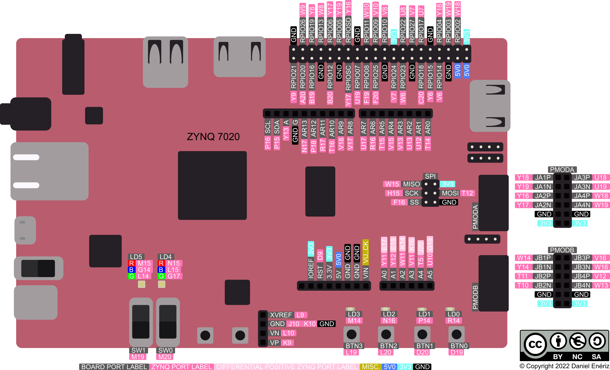
Simulate the design using the Vivado simulator
- Select Settings under the Project Manager tasks of the Flow Navigator pane.
A Settings form will appear showing the Simulation properties form.
-
Ensure the Simulation top module name is
lab1_tb. -
Select the Simulation tab, and set the Simulation Run Time value to 200 ns and click OK.
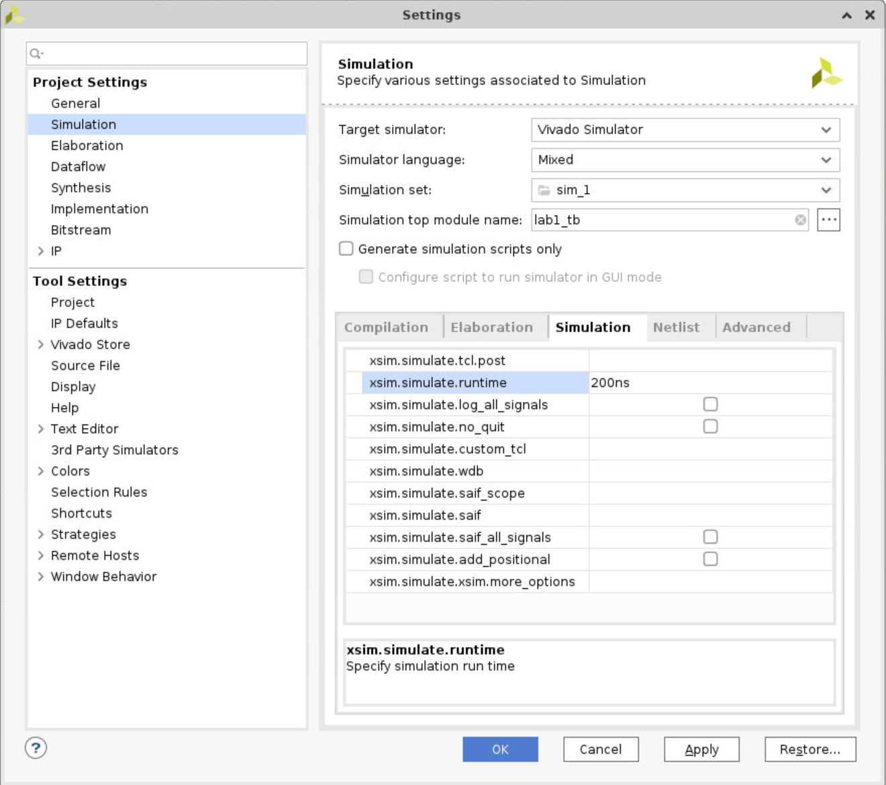
- Click on Simulation > Run Simulation > Run Behavioral Simulation Under the Project Manager tasks of the Flow Navigator pane.
The testbench and source files will be compiled and the Vivado simulator will be run (assuming no errors). You will see a simulator output like the one shown below.
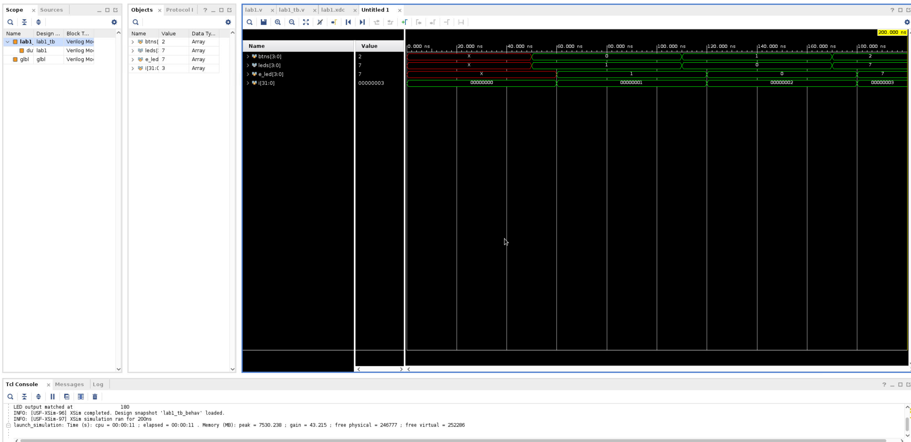
You will see four main views: (i) Scopes, where the testbench hierarchy as well as glbl instances are displayed, (ii) Objects, where top-level signals are displayed, (iii) the waveform window, and (iv) Tcl Console where the simulation activities are displayed. Notice that since the testbench used is self-checking, the results are displayed as the simulation is run.
Notice that the <project_name>.sim directory is created under the <project_name> directory, along with several low-level directories.
For Linux User:
To verify, open a new terminal and execute the following shell command:
cd <project path>
tree <project_name.sim>
For example, I create a new folder named Lab1, and name the project project_1, I will run:
cd Lab1/project_1
tree project_1.sim
The display will resemble the figure below.
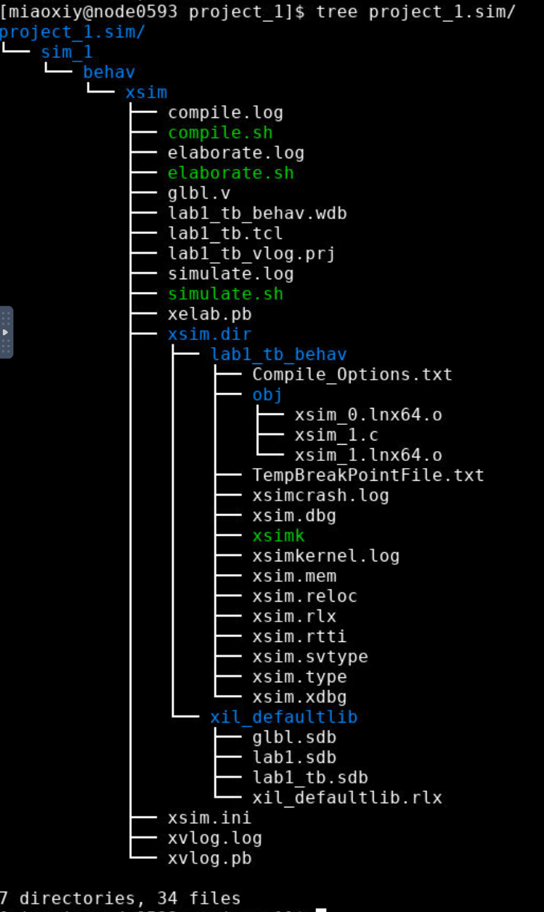
For Windows User:
Launch Command Prompt and execute the following command (example):
cd C:\Users\twei2\workspace\course\Lab1\Lab1.sim
tree /f /a
You should see the tree now.
- Back to vivado, you will see several buttons next to the waveform window which can be used for the specific purpose as listed in the figure blow.
We can click the fifth pattern (Zoom Fit) to see the entire waveform. Notice that the output changes when the input changes. You can also float the simulation waveform window by clicking on the Float button on the upper right hand side of the view. This will allow you to have a wider window to view the simulation waveforms. To reintegrate the floating window back into the GUI, simply click on the Dock Window button.
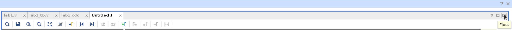
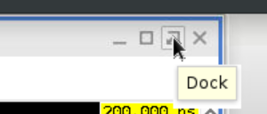
Change display format if desired
Select i[31: 0] in the waveform window, right-click, select Radix, and then select Unsigned Decimal to view the for-loop index in an unsigned integer form. Similarly, change the radix of btn[3: 0] to Hexadecimal. Leave the leds[3: 0] and e_led[3: 0] radix to binary as we want to see each output bit.
Add more signals to monitor the lower-level signals and continue to run the simulation for 500 ns.
- Expand the lab1_tb instance, if necessary, in the Scopes window and select the dut (Device Under Test) instance.
The btn[3:0] and led[3:0] signals will be displayed in the Objects window.
- Select btn[3:0] and led[3:0] and drag them into the waveform window to monitor those lower-level signals.
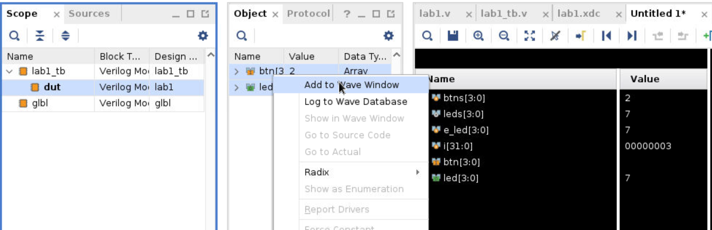
- On the simulator tool buttons ribbon bar, type 500 in the simulation run time field, click on the drop-down button of the units field and select ns since we want to run for 500 ns (total of 700 ns), and click on the Run for 500ns button. The simulation will run for an addtional 500 ns.
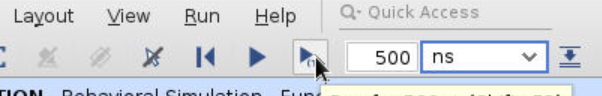
- Click on the Zoom Fit button and observe the output.
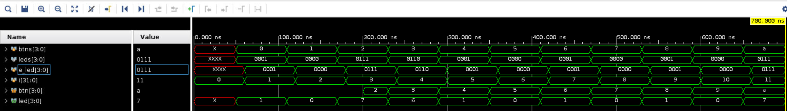
Observe the Tcl Console window and see the output is being displayed as the testbench uses the $display task.
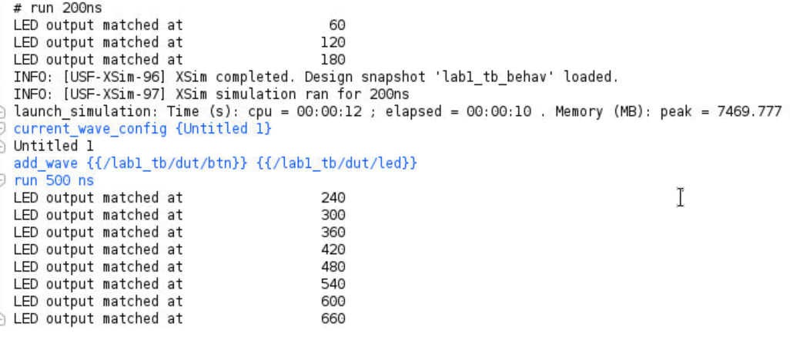
-
Close the simulator by select File > Close Simulation.
-
Click Ok and then click Discard to close it without saving the waveform.
Synthesize the Design and Analyze the Project Summary Output
- Click on Run Synthesis under the SYNTHESIS tasks of the Flow Navigator pane.
The synthesis process will be run on the lab1.v file (and all its hierarchical files if they exist; lab1.v is the top file in this example). When the process is completed a Synthesis Completed dialog box with three options will be displayed.
- Select the Open Synthesized Design option and click OK as we want to look at the synthesis output before progressing to the implementation stage.
Click Yes to close the elaborated design if the dialog box is displayed.
- Select the Project Summary tab and understand the various windows.
If you don’t see the Project Summary tab then select Window > Project Summary or click the Project Summary icon.
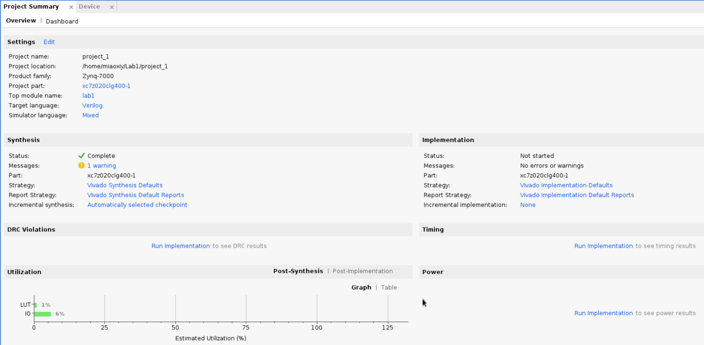
Click on the various links to see what information they provide and which allows you to change the synthesis settings.
- Click on the Table tab in the Project Summary tab at the Utilization small window.
Notice that there are an estimated 3 LUTs and 8 IOs (4 input and 4 output) that are used.
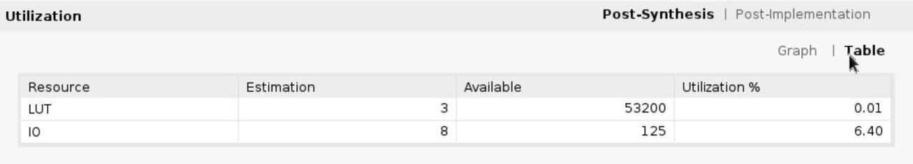
- In the Flow Navigator, under Synthesis (expand Open Synthesized Design if necessary), click on Schematic to view the synthesized design in a schematic view.
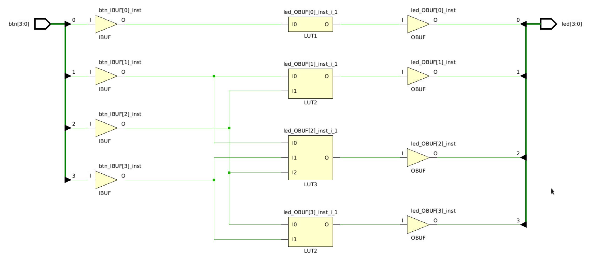
Using Windows Explorer, verify that project_1.runs (in my project) directory is created under project1. Under the runs directory, synth_1 directory is created which holds several files related to synthesis.
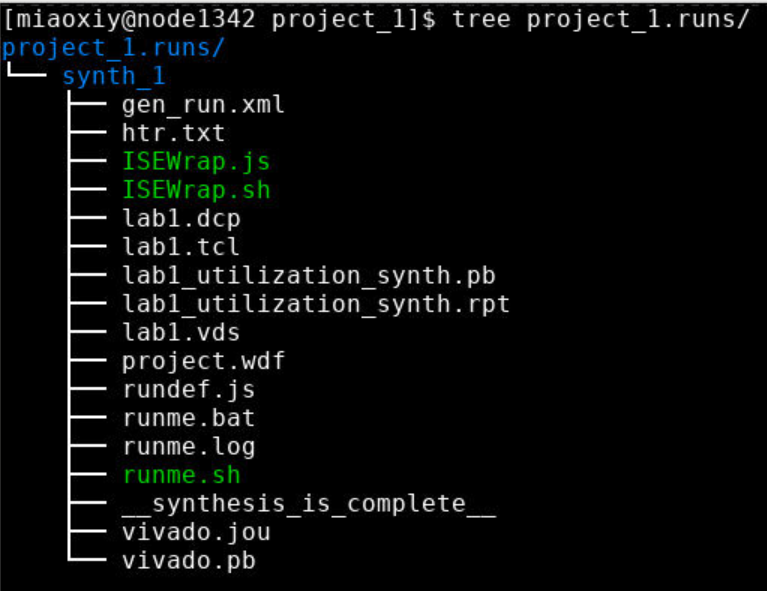
Implement the Design
- Click on
Run Implementationunder the Implementation tasks of the Flow Navigator pane.
The implementation process will be run on the synthesized design. When the process is completed an Implementation Completed dialog box with three options will be displayed. You can choose to use how many jobs you want to implement this design. In general, more jobs consumes more computing resources and less runtime.
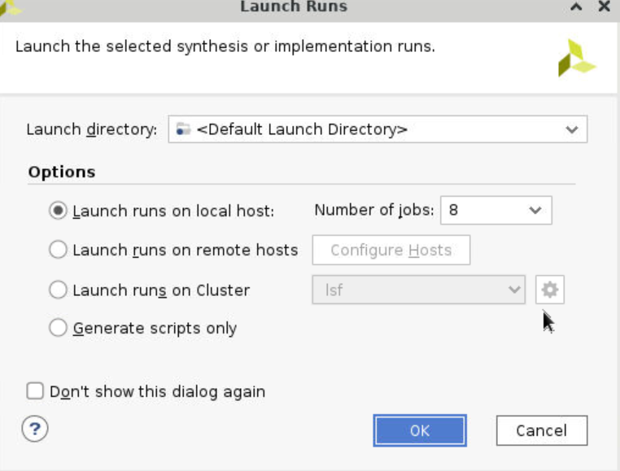
-
Select Open implemented design and click OK as we want to look at the implemented design in a Device view tab.
-
Click Yes, if promoted, to close the synthesized design. The implemented design will be opened.
-
In the Netlist pane, select one of the nets (e.g. led_OBUF[3]) and notice that the net displayed in the X1Y2 clock region in the Device view tab (you may have to zoom in to see it).
-
If it is not selected, click the Routing Resources icon to show routing resources. For example, I highlighted the led_OBUF net.
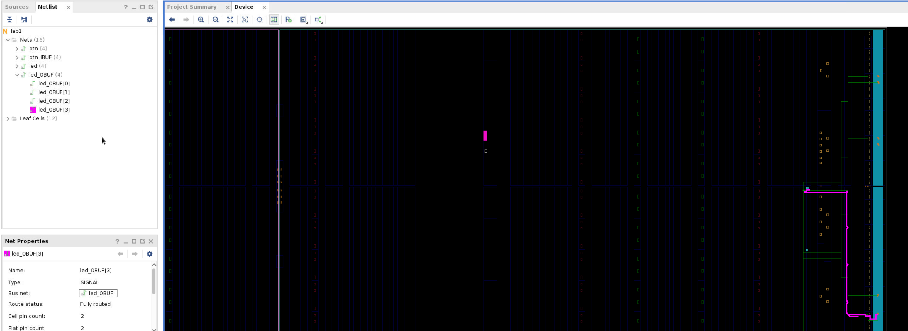
-
Close the implemented design view by selecting File > Close Implemented Design, and select the Project Summary tab (you may have to change to the Default Layout view) and observe the results.
-
Select the Post-Implementation tab.
Notice that the actual resource utilization is 3 LUTs and 8 IOs. Also, it indicates that no timing constraints were defined for this design (since the design is combinational).
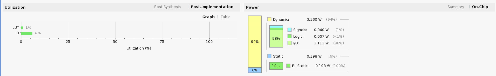
Using the Windows Explorer, verify that impl_1 directory is created at the same level as synth_1 under the project_1.runs directory. The impl_1 directory contains several files including the implementation report files.
- In Vivado, select the Reports tab in the bottom panel (if not visible, click Window in the menu bar and select Reports), and double-click on the Utilization Report entry under the Place Design section. The report will be displayed in the auxiliary view pane showing resource utilization. Note that since the design is combinatorial, no registers are used.
Perform Timing Simulation
- Select Run Simulation > Run Post-Implementation Timing Simulation process under the Simulation tasks of the Flow Navigator pane.
The Vivado simulator will be launched using the implemented design and lab1_tb as the top-level module.
Using the Windows Explorer, verify that timing directory is created under the project_1.sim > sim_1 > impl directory. The timing directory contains generated files to run the timing simulation.
-
Click on the Zoom Fit button to see the waveform window from 0 to 200 ns.
-
Right-click at 50 ns (where the btns input is set to 0000b) and select Markers > Add Marker.
-
Similarly, right-click and add a marker at around 58.000 ns where the leds changes.
-
You can also add a marker by clicking on the Add Marker button. Click on the Add Marker button and left-click at around 60 ns where e_led changes.
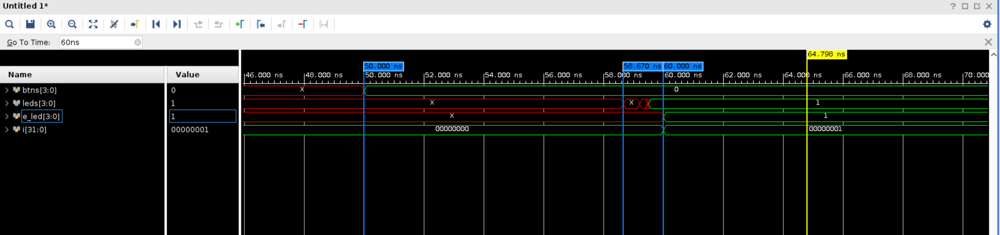
Notice that we monitored the expected led output at 10 ns after the input is changed (see the testbench) whereas the actual delay is about 8 to 9.7 ns (depending on the board).
- Close the simulator by selecting File > Close Simulation without saving any changes.
Generate the Bitstream
Notice! You may encounter a stuck problem. No worries, just restart the vivado and do the same operations. For more information about ZYNQ, please refer to Reference1 Reference2
In order to let it work successfully, we need to add PS part first.
-
Click Create Block design under IP INTEGRATOR, then click OK.
-
Click + (Add IP), search zynq and choose ZYNQ7 Processing System.
-
Click
Run Block Automation. Then connect theFCLK_CLK0andM_AXI_GP0_ACLKtogether.
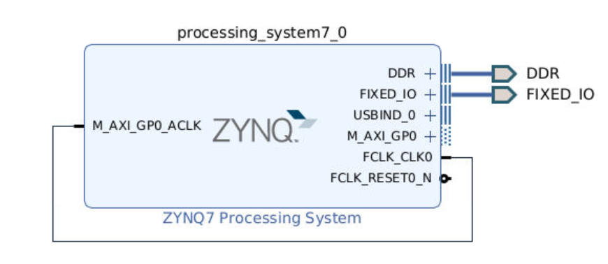
- Right click
lab1under the Sources window and chooseAdd Module to Block Design. In the Diagram window, you will see the lab1_v1_0 module has been added to the block design, move the cursor to the btn, right click and choose Make External. Do the same thing on led[3: 0].
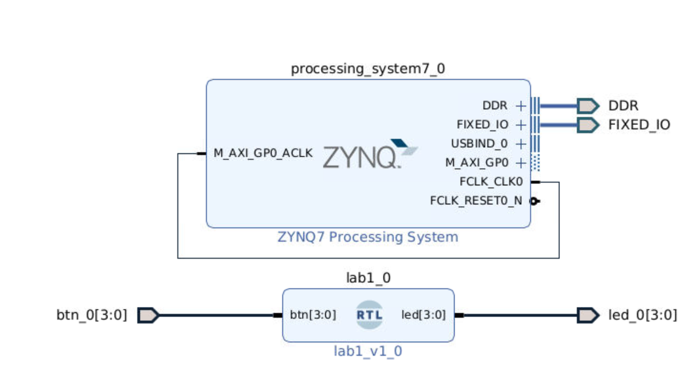
-
Right click in the blank Diagram region and choose Validate Design, then click OK.
-
Right click
design_1and choose Create HDL wrapper, then click Set as top. -
Expand the
design_1_wrapperand double clickdesign_1(design_1.v). Check the port of this module and change the constraints file (Note that the PIN names are different from simulation files, e.g., btn is now btn_0).
module design_1
(DDR_addr,
DDR_ba,
DDR_cas_n,
DDR_ck_n,
DDR_ck_p,
DDR_cke,
DDR_cs_n,
DDR_dm,
DDR_dq,
DDR_dqs_n,
DDR_dqs_p,
DDR_odt,
DDR_ras_n,
DDR_reset_n,
DDR_we_n,
FIXED_IO_ddr_vrn,
FIXED_IO_ddr_vrp,
FIXED_IO_mio,
FIXED_IO_ps_clk,
FIXED_IO_ps_porb,
FIXED_IO_ps_srstb,
btn_0,
led_0);
# PYNQ Pin Assignments
############################
# On-board Slide Buttons #
############################
set_property -dict { PACKAGE_PIN D19 IOSTANDARD LVCMOS33 } [get_ports { btn_0[0] }];
set_property -dict { PACKAGE_PIN D20 IOSTANDARD LVCMOS33 } [get_ports { btn_0[1] }];
set_property -dict { PACKAGE_PIN L20 IOSTANDARD LVCMOS33 } [get_ports { btn_0[2] }];
set_property -dict { PACKAGE_PIN L19 IOSTANDARD LVCMOS33 } [get_ports { btn_0[3] }];
############################
# On-board leds #
############################
set_property -dict { PACKAGE_PIN R14 IOSTANDARD LVCMOS33 } [get_ports { led_0[0] }];
set_property -dict { PACKAGE_PIN P14 IOSTANDARD LVCMOS33 } [get_ports { led_0[1] }];
set_property -dict { PACKAGE_PIN N16 IOSTANDARD LVCMOS33 } [get_ports { led_0[2] }];
set_property -dict { PACKAGE_PIN M14 IOSTANDARD LVCMOS33 } [get_ports { led_0[3] }];
- Click Generate Bitstream under PROGRAM AND DEBUG, then click OK.
If generate bitstream failed, please ensure the setting of the pins like below:
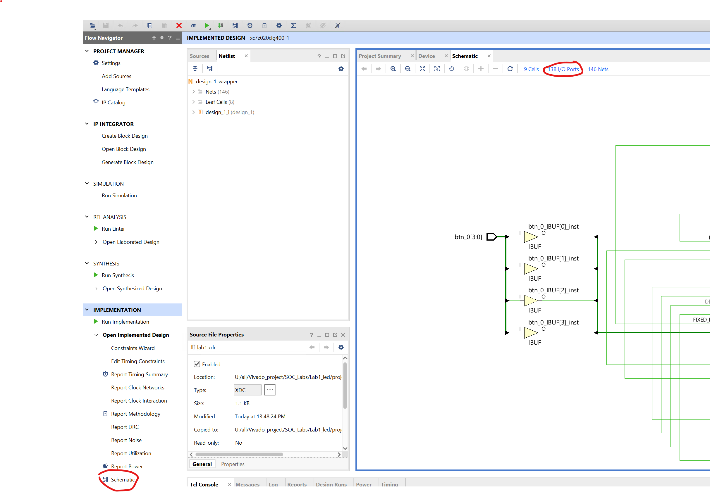
Please check the pin assignments are the same as the below:
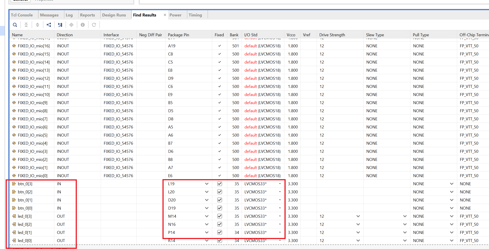
This process will have generated a design_1_wrapper.bit file under the project_1.runs > impl_1 directory.
- We need to download the
design_1_wrapper.bitto local machine. Back to dashboard-launch Palmetto Desktop, clickFilesin the orange bar and chooseHome Directory. Go toLab1/project_1/project_1.runs/impl_1and downloaddesign_1_wrapper.bit.
Verify Functionality
-
Power pynq_z2 on
-
Open a new tab and input 192.168.2.99
-
Expand
Newand create a new folder. Click this Untitled Folder and rename it (i.e. Lab1). -
Double click Lab1, then click
Uploadand uplaod design_1_wrapper.bit file -
Expand
Newand choosePython3 (ipykernel). -
The example code to download the bit file.
-
Then you can verify the function (Createa a Look Up Table based on the design to help with on-board verification).
from pynq import Overlay
from pynq import Bitstream
bit = Bitstream("design_1_wrapper.bit")
bit.download()
bit.bitfile_name
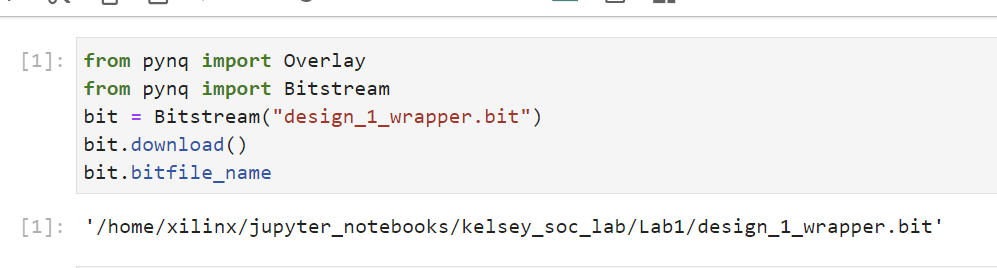
Conclusion
The Vivado software tool can be used to perform a complete HDL based design flow. The project was created using the supplied source files (HDL model and user constraint file). A behavioral simulation using the provided testbench was done to verify the model functionality. The model was then synthesized, implemented, and a bitstream was generated. The timing simulation was run on the implemented design using the same testbench. The functionality was verified in hardware using the generated bitstream.